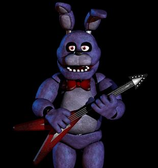

Bonnie

“Might as well face the facts. You were always destined to fail.”
- Withered Bonnie
- Bonnie is a secondary antagonist in the Five Nights at Freddy's series. Bonnie is an animatronic rabbit and children's entertainer housed at Freddy Fazbear's Pizza, along with Freddy Fazbear and Chica. He is the guitarist in Freddy's band, positioned at the left side. At midnight, he supposedly is left in a "free-roaming mode" until 6 AM, to prevent his servos from locking up.
- Along with the other animatronics, Bonnie will try to forcefully stuff any human he sees after hours into a Freddy Fazbear suit, resulting in death. Bonnie like the other classic animatronics is haunted by a child killed by William Afton.
Physical Appearance
Classic Bonnie
- Bonnie is an indigo-colored animatronic rabbit with blue blotches, magenta eyes and a squarish muzzle. The color from his muzzle, stomach, and insides of his ears is a lavender color (white in Help Wanted). This could indicate he was blue at one point, but got a paint job of purple under unknown circumstance, hence the blue blotches. He sports articulated ears that are capable of bending backwards and forwards (similar to several other animatronics' ears) and wears a red bow tie, which is partially obstructed by his chin. Onstage, he carries a dark red guitar. Unlike the other characters, he has round teeth and lacks eyebrows.
- Excluding his head, most of Bonnie's body appears identical to Freddy's, apart from the latter's color. This version of Bonnie, like most of the classic animatronics (except for Foxy), has no visible teeth on his upper jaw.
Withered Bonnie
- His older pre-rebuilt form, known as Withered Bonnie, first appeared in Five Nights at Freddy's 2, then later returned in Ultimate Custom Night and Five Nights at Freddy's VR: Help Wanted as an antagonist. His damaged appearance is due to an attempted retrofit of the older animatronics that took place before they got scrapped for the newer models, such as Toy Bonnie.[2] Like Withered Freddy, Withered Bonnie also has two buttons on his chest. His face has been gutted, with most of it being removed, revealing his endoskeleton mechanisms and dangling wires. His lower jaw remains, featuring more teeth than the original Bonnie possessed in the first game, although the jaw itself still appears to be functional as seen in his jumpscare from Help Wanted. His eyeballs are gone, exposing glowing red irises. His left arm is missing entirely, baring a tiny strip on the topmost section, with a mass of torn wires in its place. The red layering of his mouth has been removed, making his teeth seem longer than before. Withered Bonnie's right ear is mostly seen being folded, similar to a stereotypical rabbit. His suit has become tattered, particularly around the legs, and a few loose wires poke out of his body. The covering on his right hand and left foot have come off, revealing more of his endoskeleton. He also seems to have a bigger stomach, as it looks more rounded and bigger than his upper body. Also, his chin does not squash his bow tie now, and his suit seems to have changed to a darker shade of blue. Like the original Bonnie, Withered Bonnie also wears a red bowtie. Out of all the Withereds, he seems to be the most tattered.

Alias
Bonnie the rabbit
Bonnie the Bunny
Withered Bonnie
Bonnie the Bunny
Withered Bonnie
Occupation
Guitarist
Affiliation
Freddy Fazbear's Pizza
Owner
Fazbear Entertainment, Inc.
Voice Provider
Hans Yunda
Mascot
Rabbit
Skin Color
Bluish-Purple
Eye Color
Pink
Gender
Male
Animatronic Set
Classics/Withereds
Bonnie as Withered Bonnie
Personality
- The Freddy Fazbear's Pizza Theme Song reveals him to have a personality based on a rock musician;
boastful, prideful, with the speech pattern of a laid back hippie stereotype. Bonnie is by far the most
active, being usually the first one to leave the stage showing an eagerness to kill the night guard. He
also seems to be a dirty player as one of his tactics is to go to the closet then straight to the office
unexpectedly foregoing his usual route. His twitching and groaning in the west hall corner also
indicates that he is impatient to kill the night guard. Bonnie seems to be aware the nightguard is
watching him as he stares into the camera sometimes in parts and service as well as the west hall
corner.
- As Withered Bonnie in Ultimate Custom Night, he has a tendency to make face puns (in reference to the fact that his face is missing). In fact, he is strangely aware of the fact that he is damaged. His voice, in contrast to his classic counterpart, his voice sounds much more damaged, as well as the ominous buzzing in the background.
Functionality
- Normally, Bonnie is intentionally designed to perform on stage with the animatronic band, singing and
playing his electric guitar. This Bonnie model, revealed in Help Wanted, also seems to have technology
similar to funtime animatronics with parts that pop open and close automatically at the push of two
buttons, which might also be Bonnie himself before he had a paint job due to being blue and white
similar to Toy Bonnie unlike the purple and gray Bonnie with blue blotches from Five Nights at Freddy's.
References
1. "Uh, now concerning your safety, the only real risk to you as a night watchman here, if any, is the
fact that these characters, uh, if they happen to see you after hours probably won't recognize you as a
person. They'll p-most likely see you as a metal endoskeleton without its costume on. Now since that's
against the rules here at Freddy Fazbear's Pizza, they'll probably try to...forcefully stuff you inside
a Freddy Fazbear suit. Um, now, that wouldn't be so bad if the suits themselves weren't filled with
crossbeams, wires, and animatronic devices, especially around the facial area. So, you could imagine how
having your head forcefully pressed inside one of those could cause a bit of discomfort...and death. Uh,
the only parts of you that would likely see the light of day again would be your eyeballs and teeth when
they pop out the front of the mask, heh." - Phone Guy, Night 1
2. "Uh, by now I'm sure you've noticed the older models sitting in the back room. Uh, those are from the previous location. We just use them for parts now. The idea at first was to repair them...uh, they even started retrofitting them with some of the newer technology, but they were just so ugly, you know? The smell...uh, so the company decided to go in a whole new direction and make them super kid-friendly. Uh, those older ones shouldn't be able to walk around, but if they do, the whole Freddy head trick should work on them too, so, whatever." - Phone Guy, Night 2